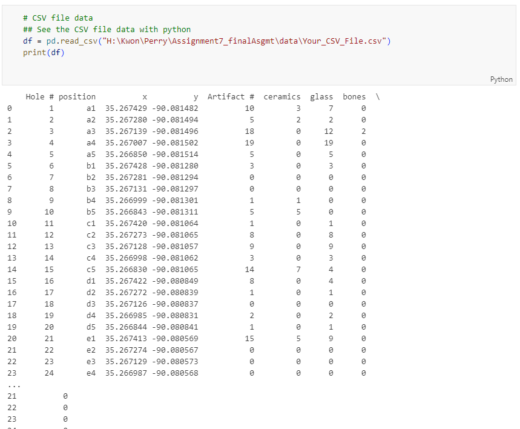
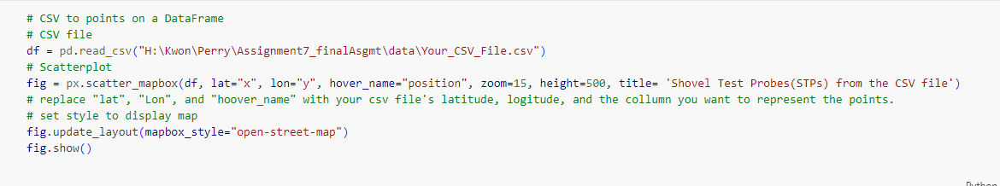
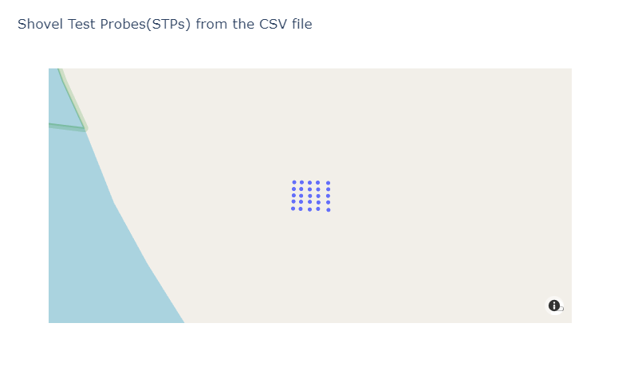
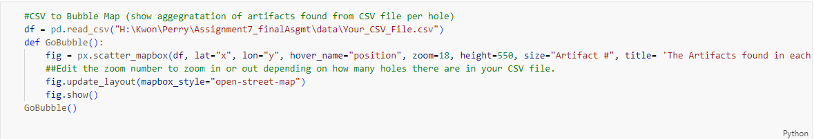
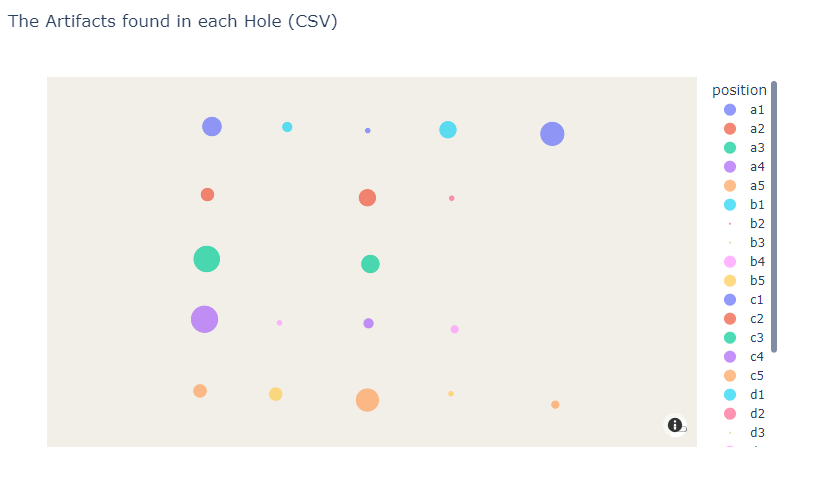
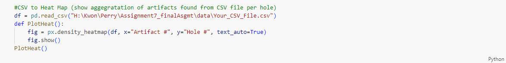
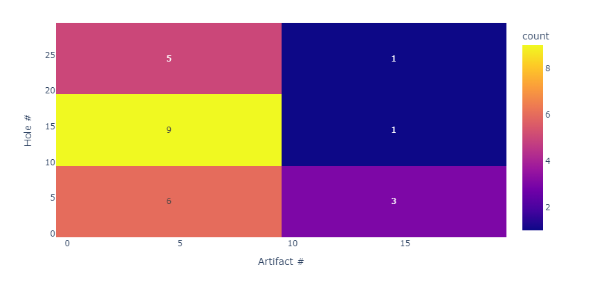

Adv. GIS Project
Tia Perry
Advanced GIS Final Project
CSV File to Plots
Overview
This Page is to Display my code that allows CSV files or files with x,y coordinates to be displayed onto a Map of your project location, a Heat Map, and Bubble Map. The code for this project uses Plotly and Pandas.
Print CSV Data

From the CSV file this function will allow you to print all the data embedded in your CSV file.
Maps
Create Map of Location Data

This code allows you to print the location of your data. Simply select an attribute that names the points, your x and y coordinate columns, respectively, and plot your data onto a map frame. This map frame is based off your project area location.

Create Bubble Map
The Code

This code allows you to make a Bubble Map that changes in size to show the aggregation of one of your columns. In the example Map I created it is used to show the aggregation of Artifacts in each STP.

Create Heat Map
The Code

This code allows you to see the aggregation of artifacts in each hole, similar to The Bubble Map Code.
